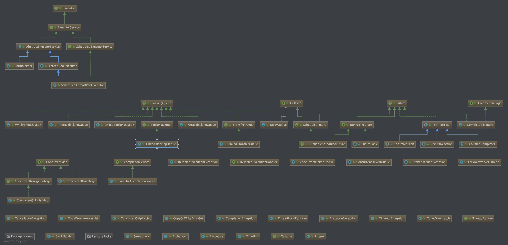

摘要
说实话，本人在平常工作中关于Java并发的使用还是比较少的，为了提升下自己，就打算看看Java中对并发的支持，本文主要介绍一下java.util.concurrent包下并发相关的内容。该包下的内容大多数是java.util包下对应集合类的并发实现，可以通过比较来看看并发的妙处。
总览
利用Idea编辑器强大的diagram功能，将java 1.8.45版本下java.util.concurrent包下的内容的简单关系生成了如下一张图，能很清晰的看到这个包中各个类的关系。

下满根据上面的关系图，来分模块以此分析。
线程池相关
Executor
ExecutorService
继承自Executor接口，在它基础之上提供了以下接口定义方法：
- shutdown()
- shutdownNow()
- submit()
- invokeAll()
- invokeAny()
ScheduledExecutorService
接口，支持延时执行任务和定期执行任务的ExecutorService，提供了以下接口方法：
schedule()
scheduleAtFixedRate()，按一定间隔定期的执行任务，终止的条件：
- 任务通过任务返回的Future取消了；
- Executor本身终止了，同样会导致任务取消；
- 任务的执行过程中出现了异常
如果定期执行的任务执行时间比设置的定期时间长的话，那么下一个任务的执行就会延迟，而不是并发的执行
scheduleWithFixedDelay()
上面三个方法返回的都是ScheduledFuture对象，ScheduledFuture实现了Delay和Future接口。
ScheduledThreadPoolExecutor是Java SDK提供的ScheduledExecutorService实现类。
AbstractExecutorService
提供了ExecutorService接口的默认实现的抽象类
- ThreadPoolExecutor
- ForkJoinPool
相关类
- TreeMap
- CountdownLatch